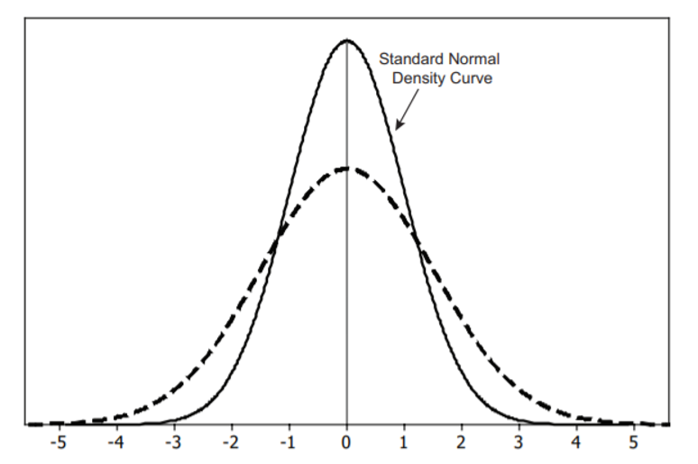
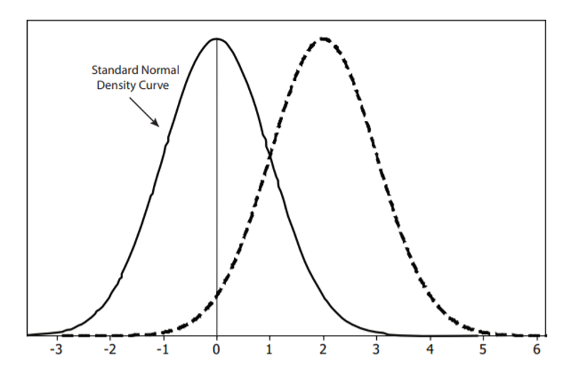

Unit 3 Normal Distributions and Confidence Intervals
5.3 Normal Distributions: Finding Values
Finding a z-Score given a Percentile
- IQ scores are normally distributed with a mean of 100 and a standard deviation of 15.
- What IQ score separates the bottom 20% from the top 80%?
20% cumulative area to the left
\(z=-0.84162\)
\(P_{20}=87.38\)

- What IQ score separates the top 15% from the bottom 85%?
85% cumulative area to the left.
\(z=1.036433\)
\(P_{85}=115.55\)

- What IQ score separates the bottom 20% from the top 80%?
- Weights of a breed of dog are normally distributed with a mean of 73 lbs and a standard deviation of 8 lbs.
- What weight separates the smallest 60% of the dogs from the heavier 40%?
60% cumulative area to the left.
\(z=0.253347\)
\(P_{60}=75.03 \) lbs

- What weight separates the heavier 55% from the lightest 45%?
45% cumulative area to the left.
\(z=-0.125661\)
\(P_{45}=71.99\) lbs

- What weight separates the smallest 60% of the dogs from the heavier 40%?
- The length of elephant pregnancies from conception to birth varies according to a distribution that is approximately normal with mean 525 days and standard deviation 32 days. If the probability of randomly selecting an elephant whose pregnancy lasted less than d days is 10%, what is d?
For point d, the cumulative area from the left is equal to 0.10.
\(z_{d}=-1.2816\)
\(d=525+(-1.2816)(32)=484\)
The probability of ramdomly selecting an elephant whose pregnancy lasted less than 484 days is approximately 0.10 or 10%
- At two years of age, sardines inhabiting Japanese waters have a length length distribution that is approximately normal with a mean of 20.20 cm and standard deviation 0.65 cm. If the probability of randomly selecting a two-year old sardine measuring longer than x is 15%, find x.
For point x, the cumulative area from the right is equal to 0.15.
\(z_{d}=1.0364\)
\(d=20.20+(1.0364)(0.65)=20.87\)
The probability of randomly selecting a two-year old sardine longer than 20.87 cm is approximately 0.15 or 15%
- A manufacturer of bulbs for movie projectors finds that the lives of the bulbs are normally distributed with a mean of 61 hours and standard deviation of 6.3 hours. The manufacturer will guarantee the bulbs so that only 3% will be replaced because of failure before the guaranteed number of hours. For how many hours should the bulbs be guaranteed?
For the number of hours, the cumulative area from the left is equal to 0.03.
\(z_{d}=-1.8808\)
\(d=61+(-1.8808)(6.3)=49.15\)
The bulbs should be guaranteed for 49.15 hours.
- Pulse Rates of adults are normally distributed with a mean of 73 bpm and a standard deviation of 8 bpm. According to one company’s health screening criteria, 8%of adults would be rejected because they have readings that are too high and 2% would be rejected because they have readings that are too low. Find the two readings that are the cutoff values separating the rejected applicants from the others.
\(z_{d_{MIN}}=-2.0537\)
\(d_{M I N}=73+(-2.0537)(8)=56.6 \mathrm{bpm}\)
\(z_{d_{M A X}}=1.4051\)
\(d_{M A X}=73+(1.4051)(8)=84.2 \mathrm{bpm}\)
The applicants with pulse rates between 56.6 bpm and 84.2 bpm will not be rejected on the basis of pulse rate.
-
Binomial vs. Normal Distributions
Consider the two following scenarios. Select which one involves a binomial distribution and which one involves a normal distribution.
Scenario 1: An Applied Statistics teacher gave a midterm exam to a class of 25 students and graded it on an approximately normal curve such that about 7.5% of the students make an A. What is the probability that 10 or more students make an A?
Scenario 2: An Applied Statistics teacher gave a midterm exam to a class of 25 students and graded it on an approximately normal curve such that the mean score is 75 and the standard deviation is 8 points. What is the probability that a randomly selected student makes an A (90 – 100 points).
- Which scenerio is using a binomial distribution?
Scenerio 1
- Which one is using a normal distribution?
Scenerio 2
- What are the clues>
Scenerio 1 has only 2 possible outcomes, fixed number of trials, each trial is independent of the others, the probability of each outcome remains constant from trial to trial. These are all criterial for a binomial distribution.
- Which scenerio is using a binomial distribution?
-

- Between what two values on the horizontal axis would you expect nearly all data from the standard normal distribution to fall?
-3 and 3
- Between what two values would you expect nearly all of the lower 50% of standard normal data to fall?
-3 and 0
- The dashed curve is a normal density curve with the same mean as the standard normal density curve but a different standard deviation. Is the standard deviation larger or smaller than the standard normal? How can you tell from the graphs of the two density curves?
Larger because the curve is wider.
- To estimate the standard deviation for the dashed normal curve, start at the top of the curve and follow the curve down along its right side. Above what value on the horizontal axis does the curve switch from bending downward to bending upward? Use this point to estimate the standard deviation for the dashed normal density curve.
-2
- Between what two values on the horizontal axis would you expect nearly all data from the standard normal distribution to fall?
-

The figure above shows two normal density curves, the standard normal density curve (solid curve) and another normal density curve (dashed curve) with the same standard deviation but a different mean.
- What is the mean of the normal distribution represented by the dashed curve? How did you determine your answer from the graph?
2.5 I looked at the peak at the middle of the graph.
- Between what two values would you expect nearly all the data from the normal distribution shown by the dashed curve to fall? How are these numbers related to the curve’s mean and standard deviation?
-0.5 and 5.5 These represent 3 standard deviations above and below the mean.
- What is the mean of the normal distribution represented by the dashed curve? How did you determine your answer from the graph?
-
![Four normal density graphs (a-d). The vertical axis on all four graphs is labeled Proportio. There are only number on all the horizontal axes. In graph a, the horizontal axis is labeled from 6 to 24 with intervals of 3. The vertical axis is labeled from 0 to 0.14 with intervals of 0.02. In graph b, the horizontal axis is labeled from -1 to 211 with intervals of 2. The vertical axis is labeled from 0 to 0.20with intervals of 0.05. In graph c, the horizontal axis is labeled from 2.5 to 5.5 with intervals of0.5. The vertical axis is labeled from 0 to 0.9 with intervals of 0.1. In graph d, the horizontal axis is labeled from 1 to 7 with intervals of 1. The vertical axis is labeled from 0 to 0.4 with intervals of 0.1.](images/u3s3p10.png)
Figures (a – d) show four normal density curves. Match the density curves with each of the following means and standard deviations. Explain how you were able to match each density curve to its mean and standard deviation
- µ = 4, σ = 1
D
- µ = 15, σ = 3
A
- µ = 4, σ = 0.5
C
- µ = 5, σ = 2
B
- µ = 4, σ = 1